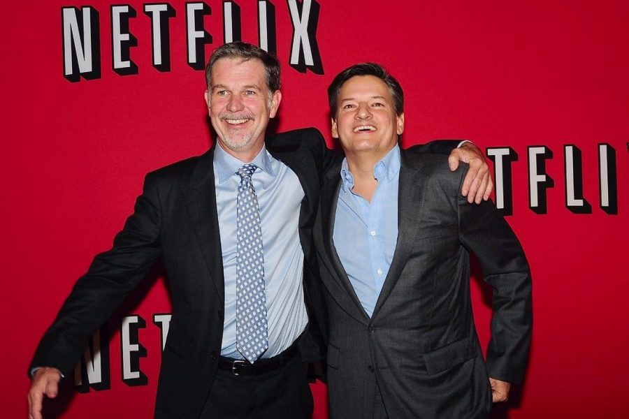

Fundación de Netflix por Reed Hastings y Marc Randolph. Servicio inicial de alquiler de DVDs por correo.

1999
Introducción del modelo de suscripción mensual ilimitada para alquiler de DVDs, eliminando las multas por demora.
2007
Lanzamiento del servicio de streaming en EE.UU., eliminando la dependencia del formato físico.
2010 - 2016
Expansión internacional (Canadá, América Latina) y lanzamiento de su primer contenido original "House of Cards". Producción propia basada en datos de usuarios.
2017 - 2020
Mejoras en el algoritmo de recomendación con IA, introducción de descargas offline y contenido interactivo como "Bandersnatch".
2021 - 2024
Expansión hacia videojuegos móviles, personalización con IA generativa y modelos híbridos con planes con publicidad.